Menu: Risanje - Črta - Prostoročna črta
Shortcut: L, F
Commands: linefree | freehand | lf

Description:
Konstruira prostoročne črte.
To orodje se naj uporablja varčno, saj tehnične risbe praviloma zahtevajo absolutno natančnost.
Pod določenimi pogoji pa je lahko smiselno določeno linijo proso z miško narisat.
npr. za lomljene robove kot je prikazano na primeru: